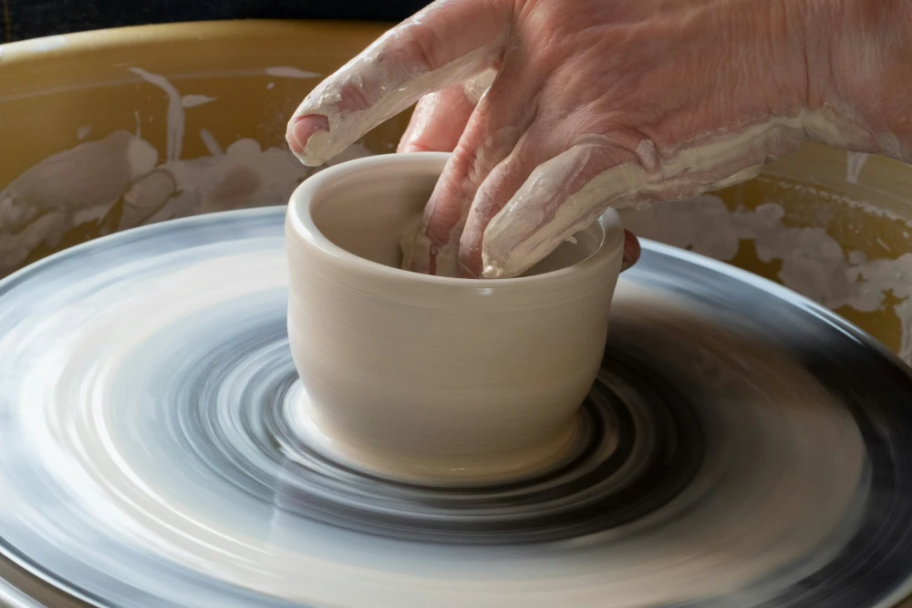

Välkommen til min blogg!

Påsken flög verkligen förbi i år. Jag vet inte vad det är men det känns som att ju äldre jag blir desto snabbare går tiden. Ibland kan jag känna att jag nästan får lite panikångest över att livet går så himla snabbt. Jag menar, hur ska man hinna med allt man vill göra innan det är slut? Påskveckan hemma hos oss var hur som helst kanonbra! Vi träffade släkt och vänner under långfredagen, påskafton och påskdagen. Med släkt och familj åt vi traditionellt påskbord med ägg, lax, köttbullar, prinskorv, potatis och en påsktårta. Med vänner vi träffade försökte vi grilla i ovädret, det var väl inte helt lyckat men maten blev ok och vi åt inomhus.
Andra saker vi hittade på påsklovet var att åka på bio, det var mysigt. Jag älskar att gå på bio, filmerna blir alltdi så mycket bättre där tillsammans med en ask popcorn. Vi var och handlade och jag och min dotter gick på en keramikkurs en kväll. Det var roligt, jag har inte drejat sen jag var barn så det var kul att testa på igen. Vi gjorde varsin mugg, dom blev kanske inte vackra men arbetet var roligt och jag tänker nog fortsätta att gå två gånger i månaden eller något. Jag tror tyvärr inte att jag har tid för mer än det.
Sen helgen efter påsk blev det ju verkligen vår på riktigt och det är så himla härligt att höra alla fåglar kvittra. Jag älska verkligen fågelkvitter, det om något är ett tecken på att våren har kommit! Det var så underbart i helgen med sol och värme. Jag har varit ute i trädgården en hel del och börjat rensa lite i rabetterna och kollat till buskar och träd. Det har kommit upp lite snödroppar och krokus så det känns verkligen som vår. Sen grillade vi igen, bara vår familj och den här gången blev det mycket bättre även om det var lite för kallt för att sitta ute. Jag hann även med en långpromenad i helgen.
Resten av våren kommer vi tillringa mest hemma men vi ska åka på en liten tur till Amesterdam i slutet på april. För att se alla vackra tulpaner. Det är något jag velat göra länge så det ska bli roligt att äntligen komma iväg. När vi väl är där blir det självklart en del sighseeing, shopping och några konstmuseum måste vi ju se. Det känns kul att ha en liten vårresa inplnaerad så att man har något att se fram emot och längta efter. Andra saker att göra i vår är trädgårdsarbete, jag har velat ha ett litet trädgårdsland länge och nu funderar vi på att gräva upp en liten plätt och testa att odla några saker som sallad, morötter, potatis och tomater så får vi se om det blir bra. Det ser jag också fram emot!
Ha det härligt i vårsolen!